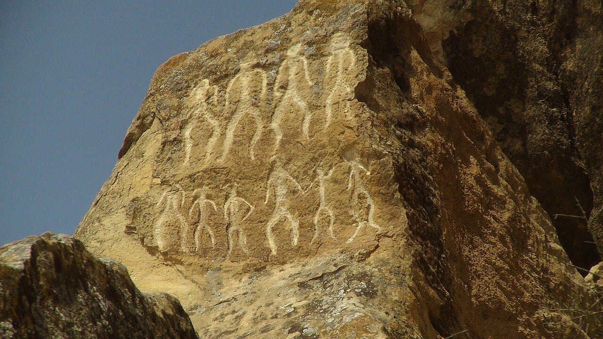
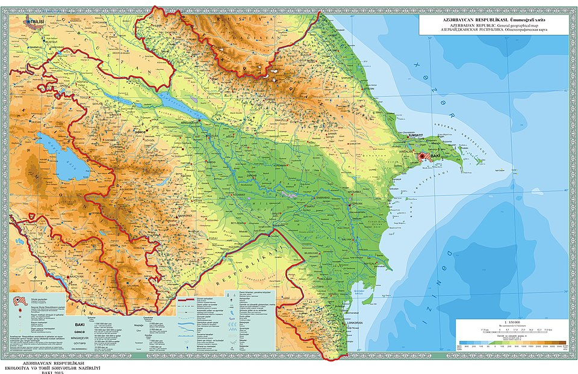

AzerHistory 3D
Minilliklərin mirasını müasir texnologiya ilə kəşf edin. Hər bir artefakt xalqımızın keçmişinə açılan bir pəncərədir.
Aşağı sürüştür
Bu sikkə orta əsrlərdə Azərbaycan ərazisindəki dövlətlərin iqtisadi müstəqilliyini nümayiş etdirir. Kufi xətti ilə yazılmış kitabə dövrün xəlifəsinin adını göstərir. Bu tapıntılar Azərbaycanın İpək Yolu üzərindəki əhəmiyyətini sübut edir.
Sikkə zərb etmək dövlətçilik rəmzi idi. Bu artefakt o dövrün vergi sistemi haqqında məlumat verir.
1968-ci ildə Məmmədəli Hüseynov tərəfindən aşkar edilən bu çənə sümüyü dünya antropologiya elmini dəyişdi. Bu, dünyada tapılan ən qədim insan qalıqlarından dördüncüsüdür.
Bu tapıntı Azərbaycanın bəşəriyyətin ilk formalaşdığı ocaqlardan biri olduğunu təsdiqləyir.
Ordubad ətrafında aparılan qazıntılarda tapılan bu artefakt qədim Naxçıvan tayfalarının yüksək sənətkarlıq bacarıqlarını göstərir.
Naxçıvan qədim Azərbaycan dövlətçiliyinin ən qədim mərkəzlərindən hesab olunur.

Qədim dövrə aid tunc at heykəlciyidir. At qədim Azərbaycan mədəniyyətində güc və azadlıq simvolu idi. Üzərindəki yəhər detalları dövrün at çapma mədəniyyətini əks etdirir.
At fiqurları çox vaxt hökmdar məzarlarında tapılır — ruhun o dünyaya süvari getməsini simvolizə edir.

Xəncər, nizə ucluğu və ox ucluğundan ibarət bu silah toplusu döyüş və ov üçün istifadə olunurdu. Sınmayan tunc xəlitəsi yerli ustalar tərəfindən işlənib.
Bu silahların forması Ön Asiya döyüş ənənəsinin Azərbaycanda unikal inkişafını göstərir.

Bu qızıl bəzək toplusu — boyunbağı, bilərziklər, sırğalar və cam — Manna dövlətinin zərif sənətkarlığının şahididir. Manna e.ə. IX–VII əsrlərdə Urmiya gölü ətrafında güclü dövlət idi.
Manna Azərbaycanın ən qədim dövlətlərindəndir. Assuriya mənbələrindən məlumdur.

Gəmiqaya dağının yamaclarında qaya üzərinə həkk edilmiş 6000-dən artıq petroqlif Azərbaycanın ən böyük açıq hava rəsm qalereyasıdır. İnsan, heyvan, ov və ritual səhnələrini əks etdirən bu şəkillər qədim insanların həyatını, inanclarını və dünyagörüşünü ortaya qoyur.
Gəmiqaya petroqlifləri Azərbaycanın UNESCO Dünya İrsi siyahısına namizəd göstərilən abidələrindəndir.

Şirvanşahlar Sarayı kompleksindəki arxeoloji qazıntılar zamanı tapılan keramika, sikkə və bəzək əşyaları XV əsr Azərbaycan mədəniyyətinin yüksək səviyyəsini sübut edir. Saray 2000-ci ildə UNESCO-nun Ümumdünya İrsi siyahısına daxil edilmişdir.
Şirvanşahlar sülaləsi əsrlər boyu Azərbaycanın ən qüdrətli dövlətlərindən birini idarə etmişdir.

Qobustan Milli Parkında 6000-dən artıq qaya rəsmi var. Ov, rəqs, gəmi və insan təsvirləri daş dövründən başlayaraq erkən orta əsrlərə qədər uzanan mürəkkəb tarixi əks etdirir. 2007-ci ildə UNESCO-nun Dünya İrsi siyahısına daxil edilib.
Qobustan rəsmləri dünya arxeologiyasında protohistorik dövrün ən əhəmiyyətli açıq hava muzeyidir.

Xınıslı nekropolündə aparılan qazıntılarda qızıl bəzəklər, silahlar, at avadanlıqları və keramika tapılmışdır. Bu tapıntılar Albaniyadan əvvəlki dövrdə — Skif və yerli tayfaların Azərbaycan ərazisindəki həyat tərzini göstərir.
Xınıslı nekropolü Albaniya öncəsi dövr üçün ən zəngin arxeoloji mənbələrdən biridir.

Mingəçevir nekropolündə aparılan qazıntılar Qafqaz Albaniyasının ən zəngin arxeoloji materiallarını üzə çıxarmışdır. Küp qəbirlərindən tapılan şüşə bilərziklər, qızıl sırğalar, silahlar və keramika bu bölgənin ticarət yolları üzərindəki strateji mövqeyini əks etdirir.
Mingəçevir tapıntıları Qafqaz Albaniyasının mədəni müxtəlifliyini və xarici mədəniyyətlərlə əlaqəsini sübut edir.

Mil düzündə tapılan Skif kurqanlarından əldə edilmiş qızıl bəzəklər, silah dəstləri və at avadanlıqları Skif tayfalarının Azərbaycan ərazisindəki mövcudluğunu sübut edir. Uçan quş, gərgin şir və döyüşçü təsvirləri ilə bəzədilmiş qızıl əşyalar bu dövrün sənətkarlıq zirvəsini göstərir.
Skiflər e.ə. VII əsrdə Cənubi Qafqaza gəlmiş köçəri xalq idi. Azərbaycan ərazisindəki kurqanlar onların mədəni izini saxlayır.

Abşeron yarımadasında yerləşən Qala kəndinin arxeoloji qazıntıları zamanı 2000-dən çox artefakt tapılmışdır. Bunlar arasında orta əsr keramikası, mis qab-qacaq, bəzək əşyaları, əmək alətləri var. Kompleks Azərbaycanın ənənəvi həyat tərzini canlı şəkildə əks etdirir.
Qala kompleksi Abşeronun arxeoloji, etnoqrafik və memarlıq irsini bir arada qoruyub saxlayan nadir muzey-qoruqlardandır.

Tapıntıların coğrafi bölgüsü Azərbaycanın hər qarışının qədim yaşayış məskəni olduğunu göstərir.